Zola Website Deployer
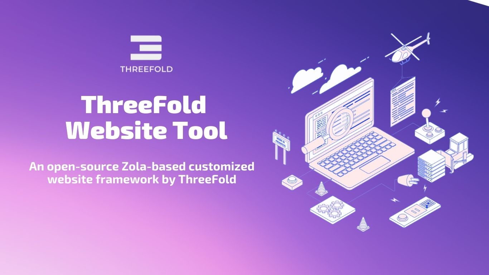
Table of Contents
- Overview
- Prerequisites
- Installing Zola Onto Your Machine
- Get Started
- Customization
- Publish Your Website (Via Github Pages)
- Important Links
- Questions and Feedback
Overview
ThreeFold Website Tool is a customized open-source Zola-based web deployment framework and static website template repository that is available for anyone to use.
At ThreeFold, we utilized Website Tool to deploy all of our web presences. For example, www.threefold.io.
What is Zola Framework?
Zola is a static site generator (SSG), similar to Hugo, Pelican, and Jekyll (for a comprehensive list of SSGs, please see Jamstack). It is written in Rust and uses the Tera template engine, which is similar to Jinja2, Django templates, Liquid, and Twig. Content is written in CommonMark, a strongly defined, highly compatible specification of Markdown.
While you can also publish a static website using Zola alone, we at ThreeFold have customized the framework and created a static website template that makes it even easier for anyone to build a website by simply cloning template and fill it with their own website content.
Prerequisites
- Github Account
- Zola Framework
- VS Code, or any code editor of choice
- Markdown language knowledge
- Basic Command Line (Terminal) Knowledge
In order to deploy and publish a website using ThreeFold Website Tool, you would need to have an account on github (to store your website data in a github repository), as well as to have Zola framework installed on your machine.
Important Links
Installing Zola Onto Your Machine
To install Zola on your machine, simply go to your terminal and run the following command:
MacOS (brew):
$ brew install zola
Please make sure you have Brew installed on your MacOS machine before installing Zola.
You should see a similar screen as below when successful:

Windows (scoop):
$ scoop install zola
Please make sure you have Scoop installed on your Windows machine before installing Zola.
You should see a similar screen as below when successful:
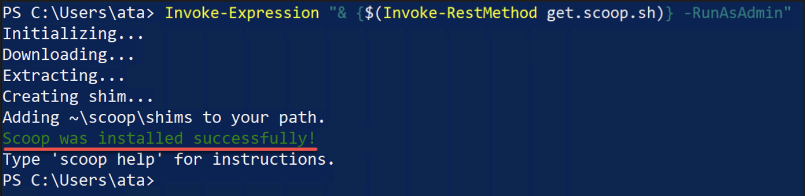
For more details on Zola Installation, and installation guidelines for other operating systems, please read: Zola Installation Manual.
Important Links
Get Started
Now that you have successfully installed Zola on your machine. You are ready to create and build your own website using ThreeFold Website Tool.
In order to do that you would need to clone ThreeFold's Website Template to your own github account, and open it locally on your computer by using VS Code or your code editing program of choice.
Fork ThreeFold's Website Template to Your Github Account
Our Team has especially created an html/css/markdown based template repository on github, free for anyone to use. To start working on your project, simply fork this repository to your own github account by clicking the 'fork' account on the repository, and rename it with your website's name.

Clone the Forked Repository Locally
After you forked the template, now you can clone the repository to your local computer so we can start working on it. Please remember the directory / folder of where you cloned the repository in your computer to make it easier for you to locate and edit it.

Open and Edit Your Cloned Zola Template with a Code Editor
Once the template is forked and cloned, open your code editor and start working on your website. I will explain a little more about the content editing process and procedure on the next pages...
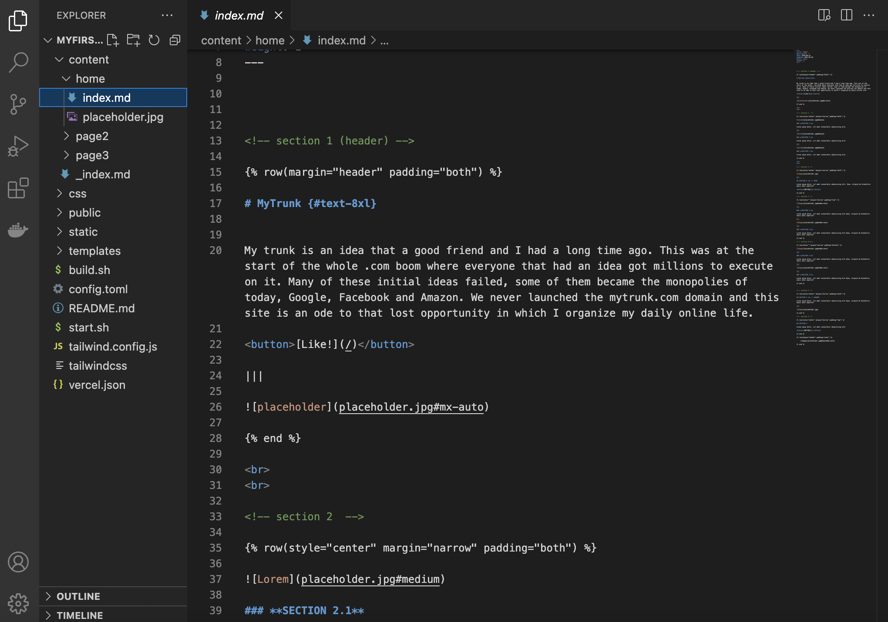
Template Guide
On this page you will find an introduction on TF Web Template and how to navigate the different template component that enable you to edit the template with your own content.
Navigating the Template
All editable content of your website would be found under ‘content’ folder. Each page of your website is a markdown (.md) file.
Each page and all the images on the page will be put into its own folder under content/ folder.
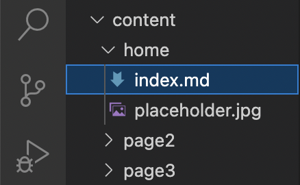
For example, here, my homepage (index.md) is put into content/home folder.
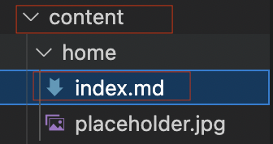
If I want to edit the homepage of my website, I would go to the following: bb
content/home/index.md
and start editing.
Top Navbar Made Easy

Every time you make a new page folder, we have designed it in a way that the website would automatically generate a new navbar item using the name of each folder you created.
based on the navbar picture above, it means that I have created 3 separate content subfolders, each with an index.md file on it called Home, ThreeFoldFeed and GetServer.
Replace Logo with your Own logo
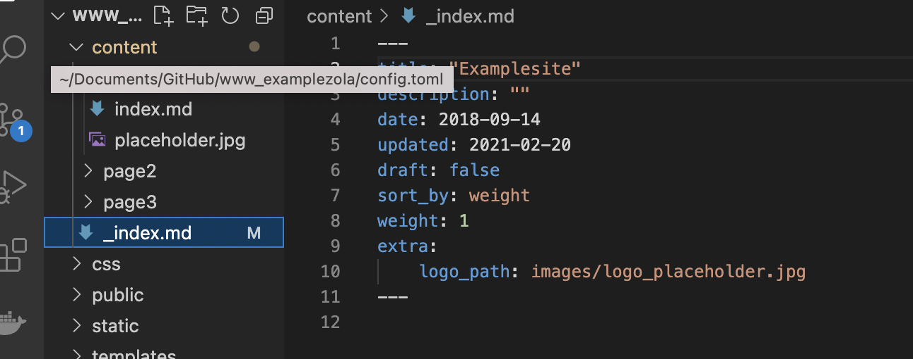
To replace the logo, add your own logo image to ‘home’ folder.
And then go to _index.md file and replace the logo_path: images/yourlogoimagename.jpg
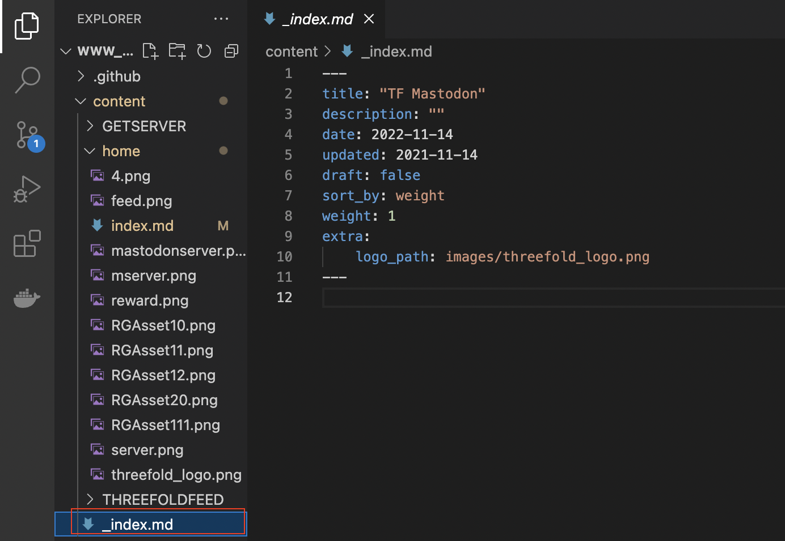
Important Links
Customization
We have designed the template in certain ways that it would accommodate different indentation web page style, such as placeholders, footer, header, left-indentation, right-indentation.
All you need to do is just replace the texts and images using markdown language, and use the indentation style you would like to use for your page. Don’t know how to markdown? Here’s a complete markdown syntax guide for you to begin with.
Happy experimenting!
Some Tutorials on Markdown
Creating A Single-Column Page Section
Since we only have one column, Every one column section begins only with row indentation syntax (style, margin, padding).
<!-- section 1 (header) -->
{% row(style="" margin="" padding="t") %}
for example:
<!-- section 1 (header) -->
{% row(style="center" margin="narrow" padding="top") %}
and ends with
{% end %}
For example, the first section of the homepage of www.mastodon.io in Markdown:
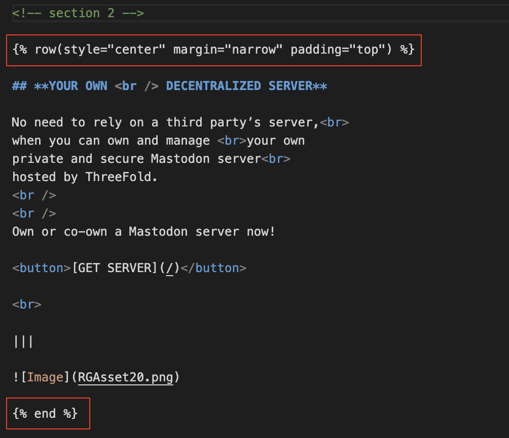
Adding Image
To add image to your page please use

The Result:
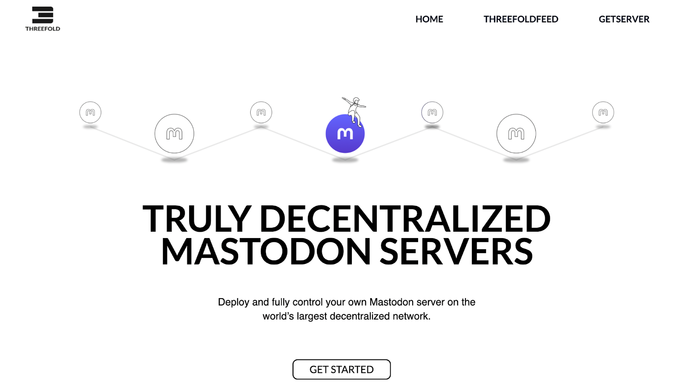
Creating Page Section with Multiple Columns
For more than one column section, we need to configure the row and column syntax. For example: Sometimes you would like to have a page where you place your texts and buttons on left column and an image on the right column, like:
What you need to do is add:
|||
in between your text and images for every column you want to create.
For example, this page consist of two columns (left and right):
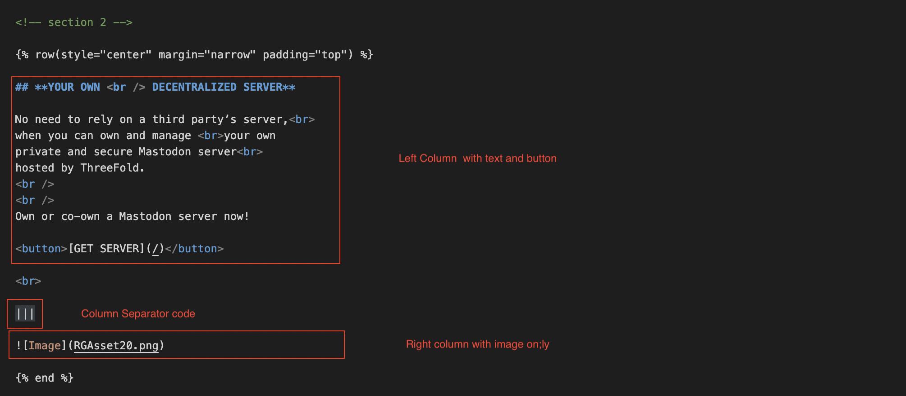
The Result:
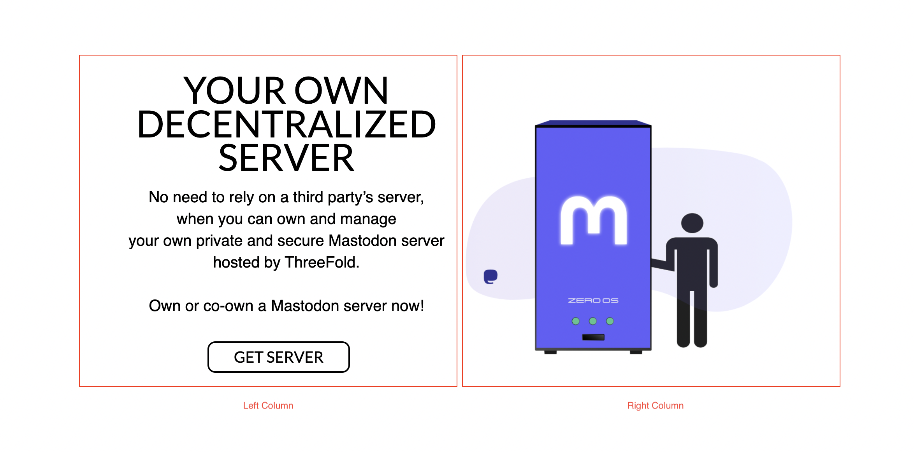
You can add more than two column like this one, a page section consist of 3 columns.
The code:

The Result:
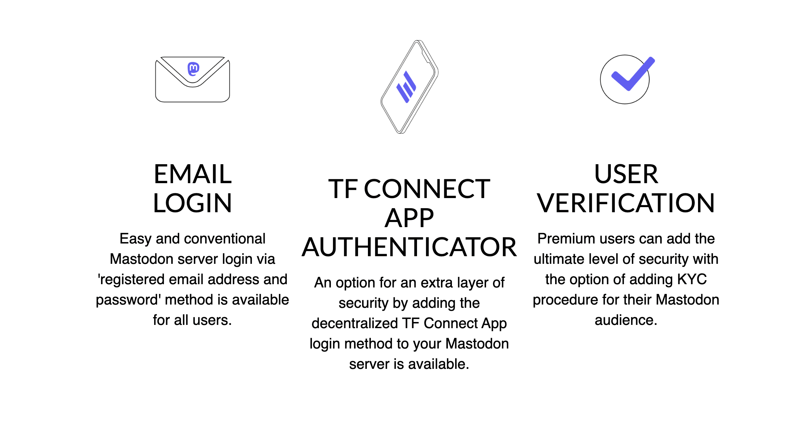
Important Links
Build and Preview Your Website Locally
After customizing your website, you might want to review and build your website locally before publishing it online. On this page you will find tutorials on how to preview and deploy your website.
To preview your website locally, simply open the terminal via your code editor and type in:
./build.sh
So that the framework starts building your website.
Then
./start.sh
So that the framework starts serving your website preview locally. Please make sure you are on located on the right website folder, for example: $ user/doc/mywebsitename before typing the command above.
The preview won't successfuly be built if you run the command in the wrong folder.
When successful, it will give you a link to a local preview of your website. Go ahead and copy paste the url onto your web browser to preview your website locally.
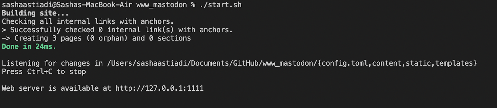
And, Congratulations! You just built your website locally!

Important Links
Publish Your Website (Via Github Pages)
Since we're using github repository to save our website content, the easiest way to publish our website is also through github pages and by using our own domain.
Once all commits have been pushed back to your github repository online, you can start publishing your website.
The first thing you need to do is to go back to your code editor, and find config.toml file on your website repo. Edit the base_url on the config.toml file on your repo to your own domain.

Save all your changes and push all your commits to its origin again.
Publish your Github page
Later on, go to your github repo settings, go to Pages on the left navigation sidebar. Add your own custom domain to start publishing your website.
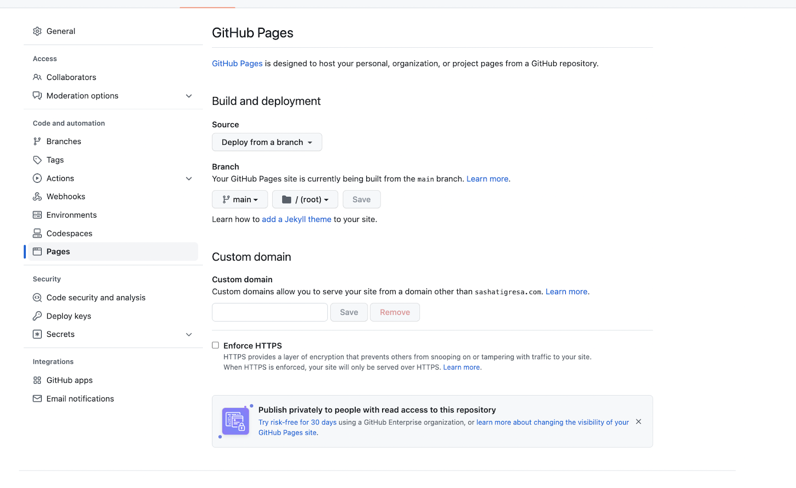
And you are done! Your website will be published, and it will take only a minute or so to complete the process. Refresh page, and you will see a link to your newly published website.

Important Links
Questions and Feedback
If you have any question or feedback, you can write a post on the ThreeFold Forum.